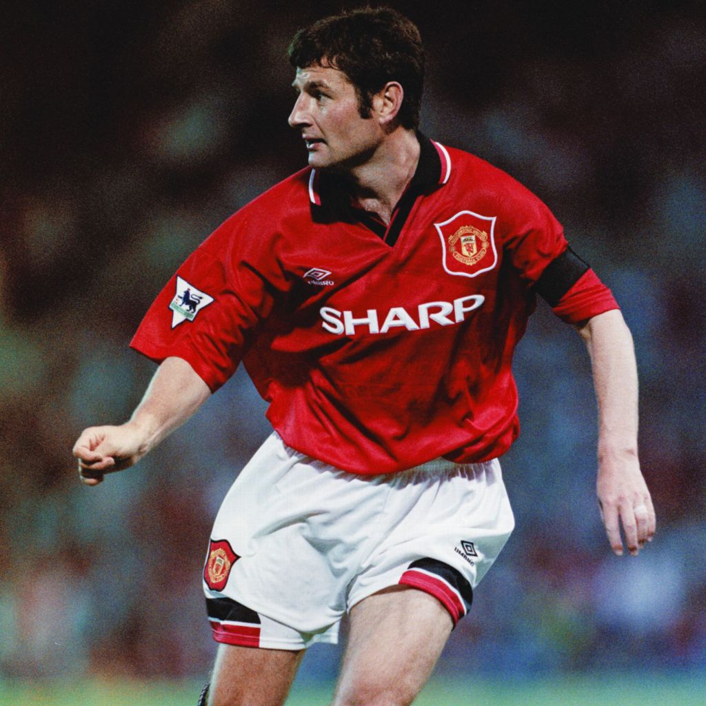
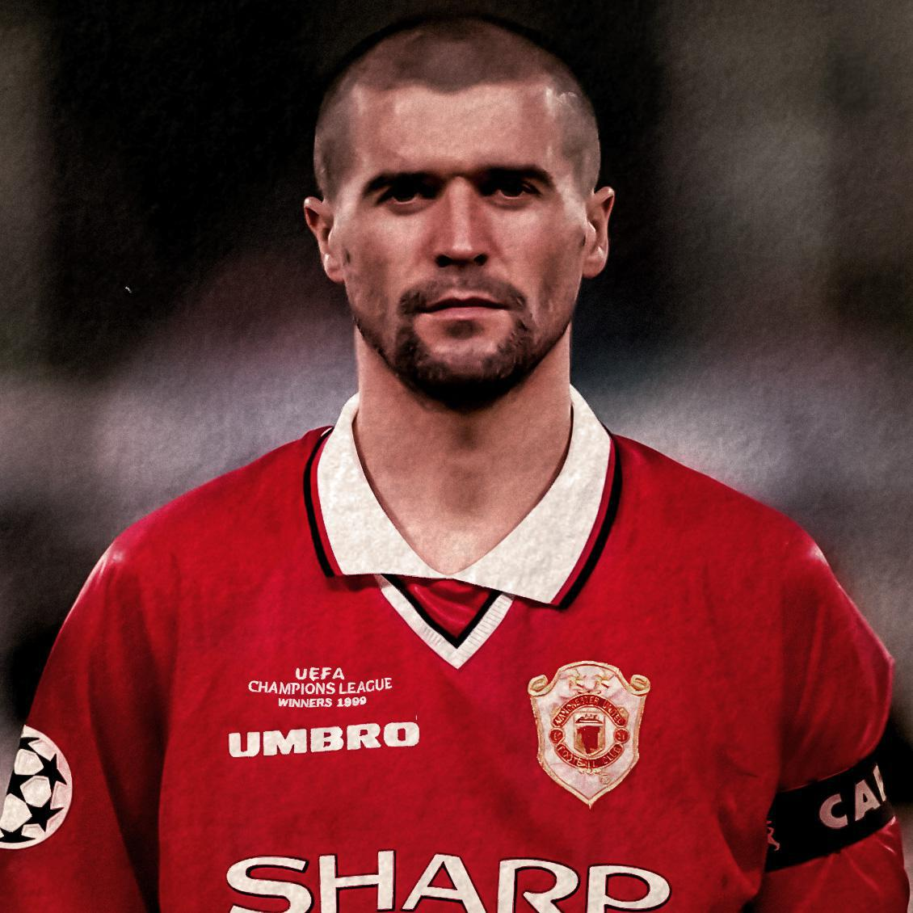
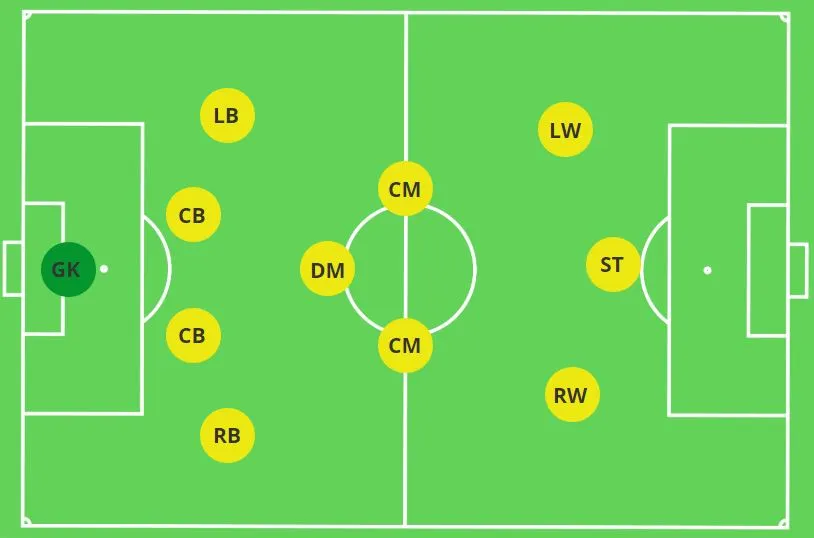

GK — Peter SchmeichelRB — Gary NevilleCB — Rio FerdinandCB — Nemanja VidicLB — Denis IrwinDM — Roy KeaneCM — Paul ScholesAM — Sir Bobby CharltonRW — Cristiano RonaldoST — Wayne RooneyLW — Ryan GiggsFormation: 4-3-3
Idea
Pace on the wings, control in midfield.
How it plays
Wingers stretch wide to open half-spaces.
Why these players
They fit United’s identity: youth, courage, attack.